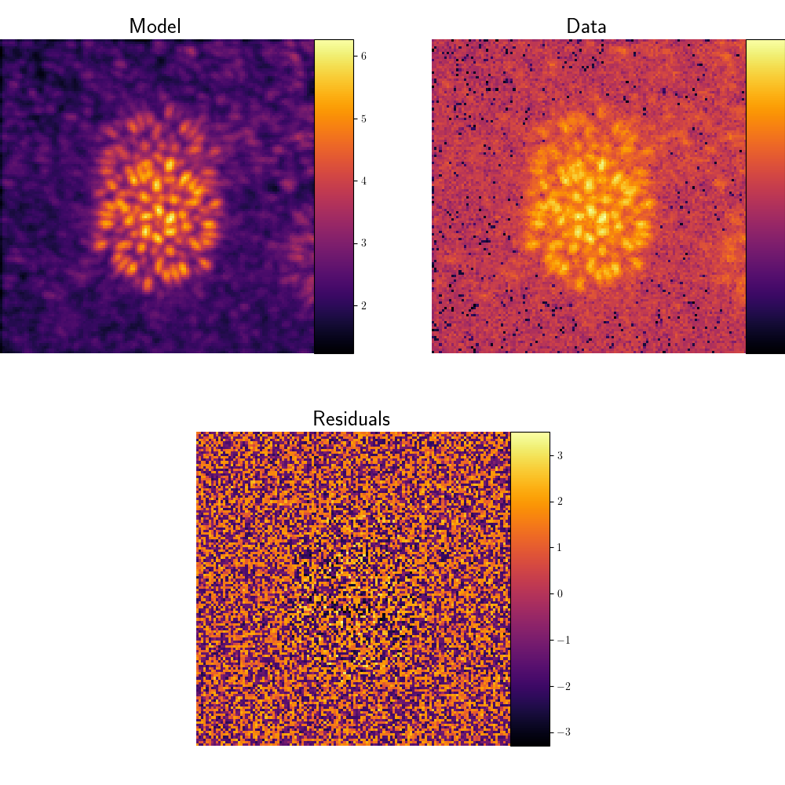
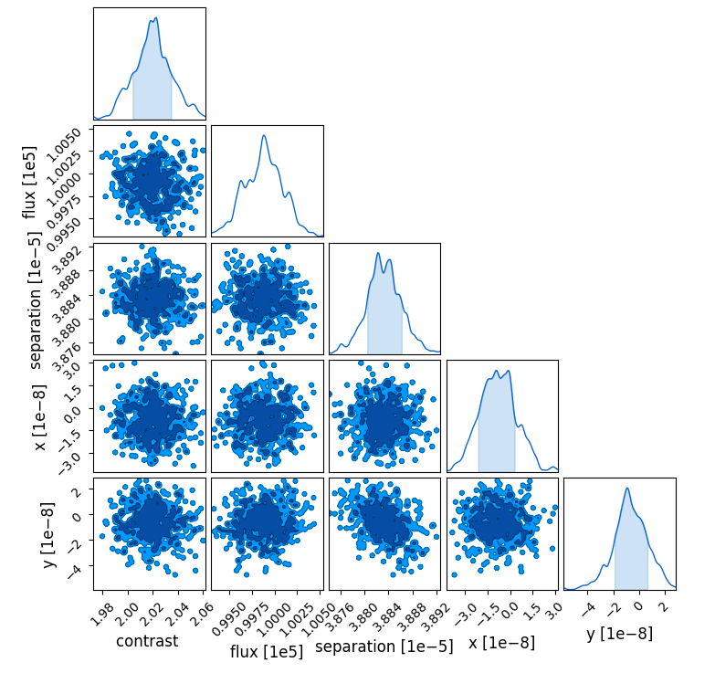

Hmc
Hamiltonian Markov-Chain-Monte-Carlo (HMC)
In this example, we use the toliman forwards model to learn the posterior
distributions of some of the parameters of the Alpha Centauri pair. The example,
neglects aberrations and other such sources of error since it was not
feesible to run more complex simulations on a standard laptop.
The first thing that you might notice is that we use a lot of packages. Firstly, its not as bad as it looks as we import submodules from each package under their own names. This is an insignificant detail and we really don't care how you chose to do your imports.
import toliman
import toliman.math as math
import toliman.constants as const
import jax
import jax.numpy as np
import jax.random as jr
import jax.lax as jl
import matplotlib as mpl
import matplotlib.pyplot as plt
import numpyro as npy
import numpyro.distributions as dist
import dLux
import equinox
import os
import chainconsumer as cc
Let's adjust some of the global matplotlib parameters. We want to use
LaTeX to render our axis ticks and titles so we will set text.usetex to
True. We also want large titles so we will increase axes.titlesize.
There is a huge list of parameters that can be set customising most of the
aspects of a plot. These are just the ones we have chosen.
mpl.rcParams["text.usetex"] = True
mpl.rcParams["axes.titlesize"] = 20
mpl.rcParams["image.cmap"] = "inferno"
The next line simply makes sure that the code is running in TOLIMAN_HOME.
This is something that you will need to do to make sure that toliman can
find the necessary data files. It shouldn't be too painful.
os.chdir stands for change_dir, but for legacy reasons a lot of the
standard library doesn't use modern naming conventions. This is the function
that changes the working directory. I have programatically generated
TOLIMAN_HOME from the current directory (os.getcwd), but you could
just retrieve the constant.
os.chdir("".join(os.getcwd().partition("toliman")[:2]))
Five lines and we have generated the forwards model. We are using mostly the default settings so no aberrations. We have set the pupil to be static since it is unlikely to be a major source of error/noise that we need to account for and static apertures are much faster.
As I described in the overview for toliman/toliman.py, the default
detector is currently a stub since a physical detector has not yet been
selected. We are just using the default noise sources, which are jitter,
saturation and pixel responses.
We are also accounting for some background stars in our simulation although they are very faint. The main concern with the background stars is that the sidelobes will obscure neighbouring central PSFs. Unfortunately, this suspicion is yet to be confirmed or refuted. The model is linear with the number of stars so be careful not to simulate too many. In my case five was doable.
There is a careful tradeoff to be had between the number of stars, which are simulated mono-chromatically and the resolution of the Alpha Centauri spectrum. The model is linear with respect to both parameters, so you will find that when operating near the memory limit of your machine, if you increase one, you will need to decrease the other.
model: object = dLux.Instrument(
optics = toliman.TolimanOptics(operate_in_static_mode = True),
detector = toliman.TolimanDetector(),
sources = [toliman.AlphaCentauri(), toliman.Background(number_of_bg_stars = 5)]
)
Let's generate some pretend data and try and recover the parameters of
Alpha Centauri. The toliman.math module provides a simulate_data
function, which applies poisson noise and gaussian white noise to the
data. The magnitude of the gaussian noise is controlled by the scale
parameter. For realistic values I would recommend representing it as
a fraction of the maximum or the norm as I have done here.
You'll notice that we then flatten the data. This is so that it plays
nicely with numpyro. numpyro has by far the worst API I can imagine
and it consistently manages to confuse my stupid ass. This is of course
a personal rant, since numpyro is more targetted torwards experts and
statisticians for whom this is bread and butter.
psf: float = model.model()
data: float = math.simulate_data(psf, 0.001* np.linalg.norm(psf))
fdata: float = data.flatten()
Let's examine our glorious PSF, pretend data and the residuals. If you
haven't used matplotlib before then this is a good opportunity to
learn a few tricks. I've recorded an explanation of what is happening
in the admonition (collapsible window).
Note
matplotlib is a very ... complex package. There are about a million
ways to do anything, generally trading simplicity for control. A big
reason for this is that matplotlib tends to expose certain functionality
at multiple levels in the API. For example, plt.subplots vs
figure.subplots. I do not claim to be a matplotlib guru but I
have find interacting with matplotlib as hierachically as possible
tends to produce the best results.
First we generate a figure using plt.figure. Since, I want to have
two rows of figures with two in the top row and a single, central figure
in the second row I will create divide the figure into two subfigures
stacked atop one another using figure.subfigures(2, 1). To get the
images I want to display to have the right size and dimensions I can
add axes to the subfigures. I do this using the figure.add_axes
command.
I like to create a specific set of axes for the colobar, as otherwise it
can be quite hard to get it to sit correctly with respect to the figure.
I create a tall, narrow set of axes for this purpose and sit it flush
against the axes for the figure. I then direct matplotlib to draw the
colobar on these axes.
def plot_image_with_cbar(
figure: object,
image: float,
corner: list,
width: float,
height: float,
title: str,
) -> object:
x: float = corner[0]
y: float = corner[1]
im_axes: object = figure.add_axes([x, y, width, height])
cbar_ax: object = figure.add_axes([x + width, y, 0.05, height])
im_cmap: object = im_axes.imshow(image)
im_cbar: object = figure.colorbar(im_cmap, cax = cbar_ax)
im_ticks: list = im_axes.axis("off")
im_frame: None = im_axes.set_frame_on(False)
im_title: object = im_axes.set_title(title)
return figure
size: float = 5.0
figure: object = plt.figure(figsize = (2 * size, 2 * size))
subfigures: object = figure.subfigures(2, 1)
psf_fig: object = plot_image_with_cbar(
subfigures[0], np.cbrt(psf), [0.0, 0.1], 0.4, 0.8, "Model"
)
psf_fig: object = plot_image_with_cbar(
psf_fig, np.cbrt(data), [0.55, 0.1], 0.4, 0.8, "Data"
)
res_fig: object = plot_image_with_cbar(
subfigures[1], np.cbrt(psf - data), [0.25, 0.1], 0.4, 0.8, "Residuals"
)

Now that we know what the model and data look like let's do some HMC.
You may recall that earlier I made a reference to flattening the data
for numpyro. We did this because numpyro supports a very unusual form
of loop syntax, presumably so that it was easier to interact with the
jax vectorisation magic in the google dimension. Simply said, when you
want to make an observation over a set, for example the pixels in an image
you must do so within the plate context manager.
A wiser individual than I will link the name plate to a PGM, which presumably
stands for something; I wouldn't know. I simply think of it as a vectorised
for loop allowing the data output to be non-scalar. Thus one deals with the
problem of jax.grad requiring scalar outputs. There are of course other
autodiff functions that allow non-scalar outputs, but this is a solution that
works.
Note
I feal required to tell you that my explanation is largely speculative.
I haven't really analysed the numpyro source code in a large amount
of detail. Like most large codebases, seeing how all the pieces fit
together is very difficult.
Let's now examine the sampling in more detail. For each posterior that
we want to learn we sample the corresponding parameter, based on some
prior. In my example I use ignorant priors, which are uniform or uniform
in log space for magnitude parameters. A strange and unfriendly feature
of numpyro is that it likes to sample near 1. It always seems to be best
to indulge numpyro and transform a value sampled around 1 into the actual
value using the numpyo.deterministic function.
Note
I have no idea why numpyro is like this. I wish it wasn't. The best
justification that I can give, is that it ensures numerical stability.
You will notice that the first argument to the so called numpyro.primitives
is a string, in our case just a repeat of the variable name. Once again this
has to do with how numpyro handles the information, associating these names
with the array of samples. It would make more sense (possibly) to use names
that you wish to plot for these parameters, saving you some time later.
The penultimate line in the hmc_model function is where the magic happens:
Louis's one line model.update_and_model method. This takes the values we
sampled from our prior and injects them into the model, before running it
to generate a PSF. We pass the flatten=True argument so that the shape
of the PSF matches the flattened data. We also have to tell the model what
parameters to update and what values to update them to. This is achieved
through the twin lists: paths and values. This taps into the zodiax interface
for pytrees so if you are confused look there.
Note
We could of course flatten the PSF manually using
model.update_and_model(*args).flatten(), but it is a common enough
occurance that it was included as an argument.
Note
You may notice that before comparing the model to the data we use it to generate a poisson sample. This is because photon noise is likely to be the largest noise source.
true_pixel_scale: float = const.get_const_as_type("TOLIMAN_DETECTOR_PIXEL_SIZE", float)
true_separation: float = const.get_const_as_type("ALPHA_CENTAURI_SEPARATION", float)
def hmc_model(model: object) -> None:
position_in_pixels: float = npy.sample(
"position_in_pixels",
dist.Uniform(-5, 5),
sample_shape = (2,)
)
position: float = npy.deterministic(
"position",
position_in_pixels * true_pixel_scale
)
logarithmic_separation: float = npy.sample(
"logarithmic_separation",
dist.Uniform(-5, -4)
)
separation: float = npy.deterministic(
"separation",
10 ** (logarithmic_separation)
)
logarithmic_flux: float = npy.sample("logarithmic_flux", dist.Uniform(4, 6))
flux: float = npy.deterministic("flux", 10 ** logarithmic_flux)
logarithmic_contrast: float = npy.sample("logarithmic_contrast", dist.Uniform(-4, 2))
contrast: float = npy.deterministic("contrast", 10 ** logarithmic_contrast)
paths: list = [
"BinarySource.position",
"BinarySource.separation",
"BinarySource.flux",
"BinarySource.contrast",
]
values: list = [
position,
separation,
flux,
contrast,
]
with npy.plate("data", len(fdata)):
poisson_model: float = dist.Poisson(
model.update_and_model("model", paths, values, flatten=True)
)
return npy.sample("psf", poisson_model, obs=fdata)
The function that we just designed is called the potential function by
numpyro. We can use this potential function to run various different
algorithms (MCMC mostly). In this case we want to use No-U-Turn Sampling (NUTS)
since it is the best. We also get to chose how many chains (independent sets
of samples) to run and how many samples should be in each chain. We get to
tune the number of warmup samples and the number of samples independently.
The numbers I chose were mainly influenced by how long things took to run
rather than any careful analyses of the chains.
Note
I am not a statistician. I will, however, blithely claim that NUTS is the best because it seems to be a popular opinion. I am vaguely aware that it works very well on complex "potentials", but I will leave the complex justification to others.
sampler = npy.infer.MCMC(
npy.infer.NUTS(hmc_model),
num_warmup=500,
num_samples=500,
num_chains=1,
progress_bar=True,
)
Now that everything about our model and analysis is nailed down we can run the HMC. Running HMC will cause you to die inside. It takes a long time and when it finally finishes there are a million ways things can go wrong. Not the least of which, is unconstrained chains. Often these issues need to be addressed by changing the priors which means waiting another 20min+ for the HMC to run, only to find out that you are still not right.
By passing in initial parameters near the global/local minima we can
make our lives easier. This is done by an appropriate selection of
init_params. While this is very useful for situations like this where
you already know the global minima, it is less useful in the field where
these things are unkown. I hear that a common pattern is to first use
gradient descent and them HMC starting from the local minima identified
by the gradient descent.
Note
My final piece of advice is to start the priors wide on purpose and slowly refine them until the chains converge.
sampler.run(jr.PRNGKey(0), model, init_params = model)
samples: float = sampler.get_samples().copy()
Note
I copied the samples (.copy) because otherwise operations performed
on the samples would irrevocably destroy the original set of samples.
This can mean that you have to re-run the algorthim just to visual
a new set of plots, which is really very inefficient.
If you recall, we sampled our parameters in a roughly normalised space
first. We don't care about most of these normalised(ish) spaces and
certainly don't want to plot them. As a result we will remove them from
the samples dictionary using pop. Moreover, we are using chainconsumer
for the plotting, which requires flat arrays. This means that position needs
to be cast to x and y manually.
logarithmic_contrast_samples: float = samples.pop("logarithmic_contrast")
logarithmic_flux_samples: float = samples.pop("logarithmic_flux")
logarithmic_separation_samples: float = samples.pop("logarithmic_separation")
position_in_pixels_samples: float = samples.pop("position_in_pixels")
samples.update({"x": samples.get("position")[:, 0], "y": samples.get("position")[:, 1]})
position: float = samples.pop("position")
out: object = cc.ChainConsumer().add_chain(samples).plotter.plot()
